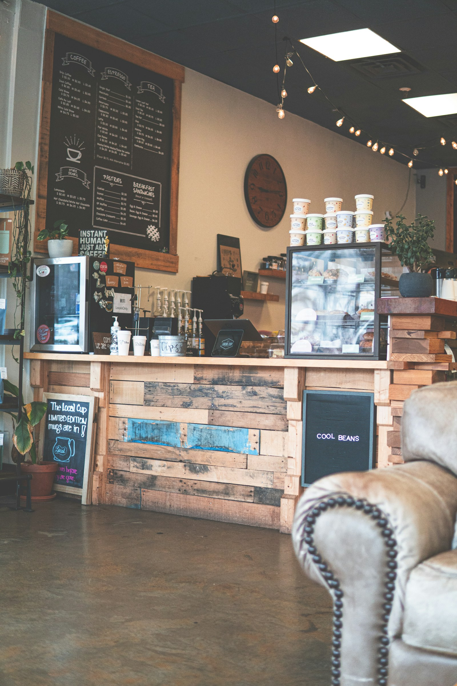

분위기 참고 사진 · 실제 예제 브랜드의 공간이 아닙니다.
이 구도를 적용할 때
전면 사진
- 선택 조건
- 공간·캠페인 사진에 충분한 가로 해상도와 문자 자리가 있을 때.
- 모바일 편집
- 세로 크롭에서 피사체가 사라지면 문구를 사진 밖으로 분리합니다.
- 동작의 범위
- 대표 장면과 행동만 연결합니다. 실제 결과·초점·필터를 기다리게 하지 않습니다.

분위기 참고 사진 · 실제 예제 브랜드의 공간이 아닙니다.
이 구도를 적용할 때